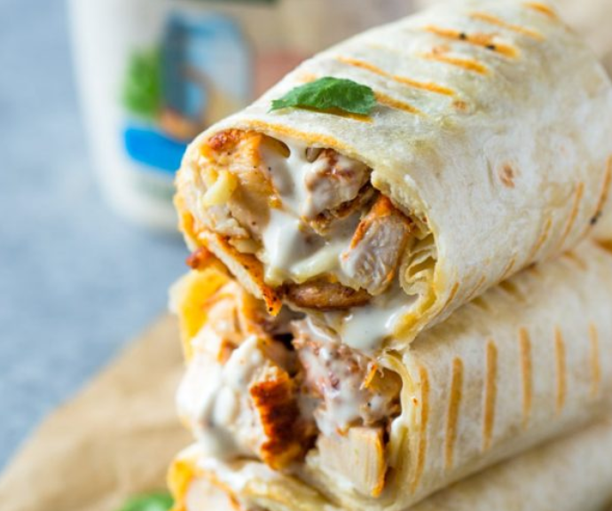

Chicken wrap

Description
Ranch and chicken are a match made in heaven. Ever since I can remember,
ranch was the only sauce I would dip my chicken in. What's not to love
about creamy zesty ranch.
If you are a huge fan of ranch dressing like I am, than you are going to
fall in love with these chicken and ranch wraps. They are extremely easy
to make and can be prepared ahead of time for work or meal prep.
Ingredients
- 2 cups cooked grilled chicken breasts chopped
- 1/4 cup ranch dressing
- 1/2 cup mozzarella cheese
- 1/4 cup cilantro minced (optional)
- 4 8 inch tortillas
Instructions
-
Lay tortillas on a clean flat surface. Place about 1/2 cup chicken, 1
tablespoon ranch, 2 tablespoons of cheese, and 1 tablespoon of minced
cilantro on each tortilla. Fold tightly to form a burrito shape.
-
Heat a heavy-duty pan or grill to medium heat. Coat with a light layer
or oil or cooking spray and cook wraps for 1-2 minutes on each side or
until the tortilla is crispy and golden. Remove from heat, slice in half
and serve immediately.
Back to main page